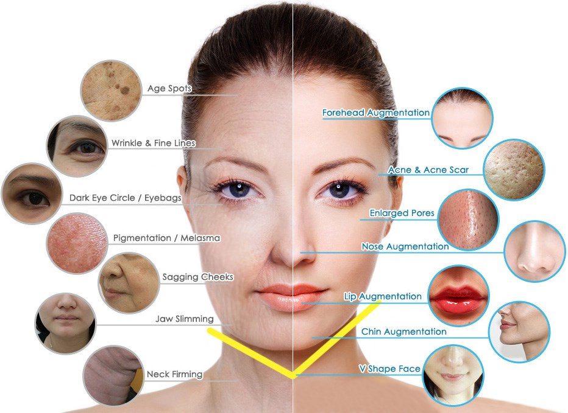

Skin
Dermatologists are skin care doctors who have expertise in the care of
normal skin, and in the diagnosis and treatment of diseases of the skin,
hair, and nails. In addition, dermatologists are knowledgeable in the
management of cosmetic disorders of the skin (such as hair loss and
scars).

© 2019 We Hospital. All rights are reserved